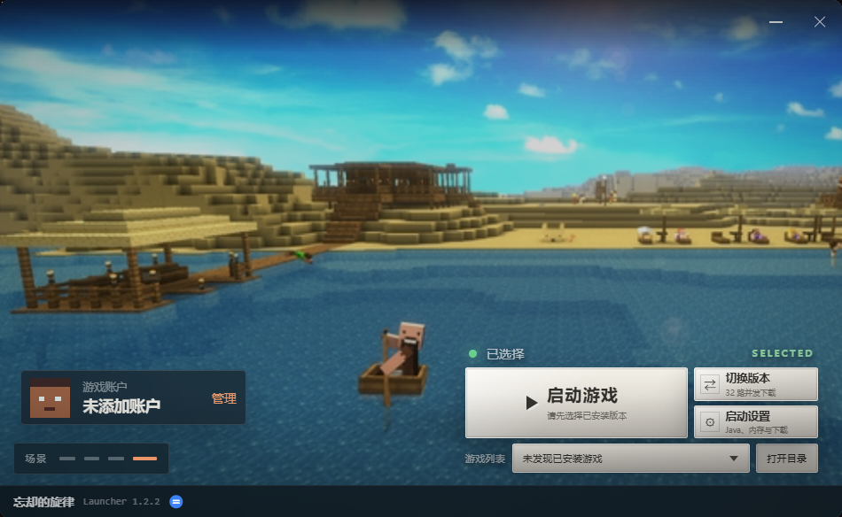

下载不必盯着等
官方源和镜像自动测速。大文件分段下载，线路变慢或失败时会尝试切换。
THE LAUNCHER / 01
启动页只显示已经装好的游戏。换版本、切账户、打开设置，不用在一长串下载目录里翻找。

BUILT FOR PLAY / 02
常做的事都在手边。下载和安装过程也能随时看见进度。
官方源和镜像自动测速。大文件分段下载，线路变慢或失败时会尝试切换。
支持离线、Microsoft 和 LittleSkin 登录。皮肤头像会跟着当前账户更新。
Fabric、Forge、NeoForge 可以直接选版本安装，也能导入 Modrinth 和 CurseForge 整合包。
先检查你指定的 Java；如果版本不合适，启动器会准备经过校验的运行环境。
世界已经在那儿了。
出发吧。